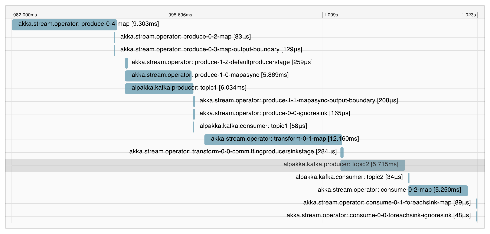

Production considerations
Alpakka Kafka API
- Do not use
Consumer.atMostOnceSourcein production as it internally commits the offset after every element. - If you create
Producersinks in “inner flows”, be sure to share theProducerinstance. This avoids the expensive creation ofKafkaProducerinstances.
This is just a start, please add your experiences to this list by opening a Pull Request.
Monitoring and Tracing
For performance monitoring consider Lightbend Telemetry which gives insights into Akka and Akka Streams.
Lightbend Telemetry supports OpenTracing context propagation so that you can follow individual messages through Kafka producers and consumers.

See Enabling OpenTracing in your app.
Security setup
The different security setups offered by Kafka brokers are described in the Apache Kafka documentation.
SSL
The properties described in Kafka’s Configuring Kafka Clients for SSL go in the akka.kafka.consumer.kafka-clients and akka.kafka.producer.kafka-clients sections of the configuration, or can be added programmatically via ProducerSettings.withProperties and ConsumerSettings.withProperties. The necessary property name constants are available in SslConfigs.
akka.kafka.producer { # and akka.kafka.consumer respectively
kafka-clients {
security.protocol=SSL
ssl.truststore.location=/var/private/ssl/kafka.client.truststore.jks
ssl.truststore.password=test1234
ssl.keystore.location=/var/private/ssl/kafka.client.keystore.jks
ssl.keystore.password=test1234
ssl.key.password=test1234
}
}
The truststore and keystore locations may specify URLs, absolute paths or relative paths (starting with ./).
You have the option to pass the passwords as command line parameters or environment values via the support in Config.
Kerberos
The properties described in Kafka’s Configuring Kafka Clients for Kerberos go in the akka.kafka.consumer.kafka-clients and akka.kafka.producer.kafka-clients sections of the configuration, or can be added programmatically via ProducerSettings.withProperties and ConsumerSettings.withProperties.
akka.kafka.producer { # and akka.kafka.consumer respectively
kafka-clients {
security.protocol=SASL_PLAINTEXT # (or SASL_SSL)
sasl.mechanism=GSSAPI
sasl.kerberos.service.name=kafka
}
}